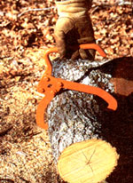
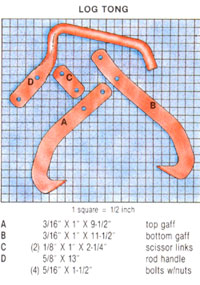
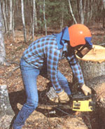
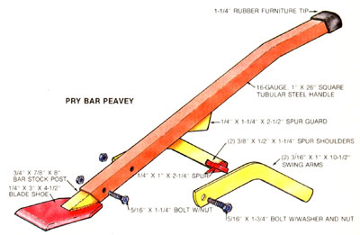
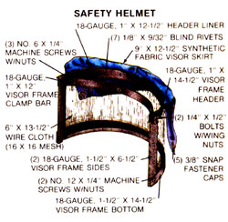

Three Tip-Top Timber Tools
July/August 1985
You might not be able to buy these tools at the store, but you certainly can make them!
BY STAFF PHOTOS
Harvesting wood is hard work . . . especially for the occasional cutter who-like many of us-can't justify the purchase of costly laborsaving equipment when sawing only enough wood to keep the stove or fireplace stocked. Yet properly designed hand tools, made from scrap in your own modest workshop, can ease the burden of manual labor while still doing a great job of keeping expenses in check.
The three implements you see on these two pages were adapted from Scandinavian designs and are well suited to the type of secondary-growth cutting faced by most weekend lumberjacks. Each tool cost less than $5.00 to build, and only one-the pry bar peavey-required welding of any kind. Read on and find out how you can spend a couple of leisure hours to save a lot of time on the woodpile.
THE LOG TONG
Like the ice seller's tool, this device uses mechanical advantage to keep a grip on the work . . . but its design goes the old block tongs one better because it's meant to be used with a single hand. Since the handle pivots on one gaff' and is connected through links to the other, the pressure of the "bite" is proportional to the weight of the load.
To fashion a tong, first clamp two 11-1/2" sections of 3/16" X 1" flat stock together and drill a 5/16" hole through each end of the matched set. Then join the pieces with two short bolts, and-using our illustration as a guide-bend the straps into the configuration shown. (Yes, you're going to need a torch, a vise, locking pliers, and a hammer to get the job done, but once you've heated the metal to a dull red, it'll bend very easily and will probably even have to be reflattened along the curves with the hammer.)
Note that the completed tool has one long gaff with a slight bend at its mounted end. Form this 1-1/2"-long offset into both metal pieces; then, once everything has air-cooled, remove the end bolts and use a hacksaw to cut points on the tips and to trim the upper gaff to its 8" finished length. Bevel the face of each point with a grinder, then go on to round the nose and tail of each "hook."
The handle should be formed, under heat, in the same manner as the tongs were, then 3-1/2" of its forward end must be flattened under blows from the hammer. Again, round the nose of the completed part and smooth out the edges of its opposite tip. Finally, cut the two scissor links from 1/8" X 1" stock, finish their ends, and drill 5/16" holes through both pieces at points 1-3/8" apart.
The remaining pivot holes should be drilled as follows: The handle gets two, 1-3/4" apart . . . the top gaff, a pair 1-5/8" from each other . . . and the bottom gaff, another two 1-11/16" apart, all measured from the center of the openings. Once all the holes are bored, you can paint and assemble the tool by tightening the nuts down to the shanks and cutting off the threads that protrude. The handle and top gaff fasten to one side of the bottom gaff, and the links bolt to each side of those parts at their two forward holes.
PRY BAR PEAVEY
This tool is essentially a felling lever with a few added kinks. It has a spurred swing arm like that of a peavey, and the shoe has a beveled tip and a sharpened side edge. It's great for freeing chain saw bars bound in timber, turning midsize logs, minor debarking, and-with the sharpened flank-trimming twigs and small branches prior to bucking.
Knock this one out by heating and then bending a 25° angle into the 1" X 26" tubular steel handle about 7-1/2" from one end. Then drill two 5/16" holes, 2-1/2" apart, through the tube's opposite end so they're perpendicular to the bend and the upper one is 3-1/4" from the closest tip.
Next, cut a 25° bevel in one end of a 3/4" X 7/8" X 8" section of solid power takeoff shaft stock. Trim the 1/4" X 3" X 4-1/2" metal plate so one end tapers to a 1-3/8" width (the angled sides should be about 1- 1/2" long), then weld this newly made shoe to the diagonally cut end of the bar stock so the tapered end comes flush with the rear of the bevel.
To make the swing arm, clamp and endbolt the two 10-1/2" sections of 3/16" X 1" flat stock together, and, with the help of the torch, bend them as one so there's a 45° crook in the center. Once they've cooled, cut the bolt holes from one end and smooth the tips with the grinder.
The swing arm spur can be fashioned with a hacksaw and the grinding stone from a piece of 1/4" stock, as can the 1-1/4"-sided, 21/2"base triangular spur guard. Similarly, the two shoulders that support the spur itself can be made from 3/8"-thick material. Temporarily bolt the swing arm sections, bends up, into the uppermost hole in the handle. Then weld a spur shoulder to the inside forward edge of each swing arm, and the spur itself to the two shoulders so the point meets the straight portion of the handle at approximately 45° . . . making certain the arms are parallel with one another as you do so. The guard can then be welded just below the spur and in line with it.
Remove the swing arm assembly and tap the shoe and its post into the straight end of the handle. Cross-drill the solid piece at the handle holes, then lock it in place with the two 5/16" bolts, seeing to it that the swing arm assembly is refastened and allowed to move freely. (To prevent it from flopping when not in use, simply pinch the bars a bit closer together at the spur end so they'll bind on the handle when the arm is pushed all the way back.)
With that done, you can sharpen the working edges. The front of the shoe should be heated to an orange-red and hammered against metal until the upper face is beveled to about 25° and the edges splay outward. Then the left side (if you're right-handed) can be ground to a 30° bevel, trued on a coarse stone, and honed on its top and bottom surfaces. The spur should be angled to 30° on each side and the tip filed to a sharp point. Finally, if you wish, you can wrap friction tape around the hand grip, cap the end with a furniture tip, and paint the rest of the implement.
SAFETY HELMET
Though some may not consider it a tool, this piece of headgear offers protection against falling limbs and branches, flying debris, and the potentially damaging staccato noise of a chain saw engine hard at work.
The basic helmet is nothing more than a motorcycle "brain bucket" that we picked up at a flea market for $3.00. The only prerequisites for a good find are that it be in one piece, fit comfortably, and have a functional chin strap and snap studs at the front.
Essentially, you'll just be adding a screened visor and some sections of cloth. Locate a piece of 18- to 20-gauge sheet metal that measures at least 8" X 15", then use aviation snips to cut it into strips of the sizes called for in our illustration. Next, cut some sturdy wire cloth (metal door screening will do) to 6" X 13-1/2" dimensions, and lay it on the visor frame pieces so you can mark the bends in the bottom and side sections.
Crease the frame parts by hammering them over a hard lip (such as a metal plate or a workbench), then slip the screen under the folds and tap them down. Use a flat-nosed punch to dimple the folds every inch or so from the back side. Lay the header in place, then drill 1/4" holes at the frame's four corners to hold the fastening bolts. (The completed perimeter should measure 6-1/4" X 14-1/2".) To secure the top part of the screen and the cloth visor skirt, fold an inch or so of the fabric over and capture it and the wire cloth between the metal header liner and the header, locking the two strips together with the shorter blind rivets.
Complete the visor by bending two 1" tabs into the ends of the visor clamp bar, then forming that strip to match the contour of the front of the helmet. Attach three of the snap fastener caps to the bar-in line with their mates already on the helmet-with the No. 6 screws. Next, put the No. 12 screws in place at the frame's lower corners and bend the frame into an arc so you'll be able to use the 1/4" bolts to fasten the clamp bar through the upper corners. Snap the visor onto the helmet, then pop the remaining two caps into the free corners of the skirt, and screw the studs into the sides of the shell to hold the caps. Finish up by riveting the nape skirt to the rear edge of the helmet and painting the visor and fiberglass shell the colors of your choice.
|
 |
 |
 |
|
 |
 |
 |